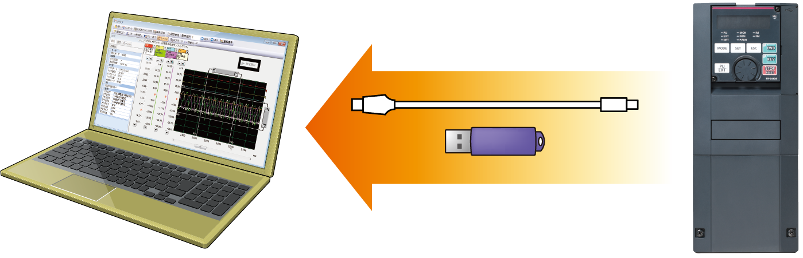

Inverters-FREQROL-F Series -FREQROL-F800- Keamanan & Keselamatan

Peningkatan Keamanan Sistem
Kepatuhan standar keselamatan 
Kontrol dengan fungsi keselamatan dapat dilakukan dengan mudah.
Fungsi keselamatan Safe Torque Off (STO) didukung oleh inverter. Inverter FR-F800 dengan fungsi keselamatan mematuhi standar keselamatan dengan biaya yang murah.
- EN ISO 13849-1 PLd / Cat.3
- EN 61508, EN 61800-5-2 SIL2
- *1Komunikasi keselamatan tersedia antara pengontrol terprogram keselamatan dan modul I/O jarak jauh.
- *2Satu MC diperlukan untuk mematikan daya saat fungsi perlindungan diaktifkan.
Perawatan yang Andal dan Aman
Suplai daya standar 24 VDC untuk sirkuit kontrol
Selain terminal masukan catu daya yang ada (R1 dan S1) dari rangkaian kontrol, masukan 24 VDC dilengkapi sebagai standar.
Daya 24 VDC yang disuplai dari luar dapat disalurkan ke rangkaian kontrol secara lokal.
Pengaturan parameter dan operasi komunikasi dapat dilakukan tanpa menyalakan daya utama.
Pencegahan masalah dengan pemantauan suhu
Inverter dilengkapi dengan sensor suhu internal, yang mengeluarkan sinyal saat suhu internal tinggi.
Ini memudahkan pendeteksian kenaikan suhu di dalam inverter setelah kegagalan fungsi kipas pendingin, atau kenaikan suhu udara sekitar karena kondisi pengoperasian inverter.
Komponen Berumur Panjang dan Fungsi Pemeriksaan Umur Panjang
Komponen berumur panjang
- Masa pakai kipas pendingin kini 10 tahun*3.
Masa pakai dapat diperpanjang lebih lanjut dengan kontrol ON/OFF kipas pendingin. - Kapasitor dengan masa pakai desain 10 tahun *3*4 disesuaikan.
- Indikasi masa pakai komponen masa pakai.
| Components | Estimated lifespan of the FR-F800*3 | Guideline of JEMA*5 |
|---|---|---|
| Cooling fan | 10 years | 2 to 3 years |
| Main circuit smoothing capacitor | 10 years*4 | 5 years |
| Printed board smoothing capacitor | 10 years*4 | 5 years |
- *3Suhu udara sekitar: Rata-rata tahunan 40°C (bebas dari gas korosif, gas mudah terbakar, kabut oli, debu, dan kotoran).
Masa pakai desain adalah nilai terhitung dari peringkat LD dan bukan masa pakai produk yang terjamin. - *4Arus keluaran: 80% dari peringkat LD inverter
- *5Kutipan dari "Pemeriksaan berkala inverter transistor" dari JEMA (Asosiasi Produsen Listrik Jepang).
Fungsi pemeriksaan kehidupan yang ditingkatkan
- Sensor termal internal dipasang pada semua inverter sebagai standar, yang memungkinkan pemantauan lingkungan instalasi. Gunakan fungsi ini sebagai panduan untuk diagnosis masa pakai.
- Pengatur waktu perawatan tersedia untuk hingga tiga perangkat periferal, seperti motor dan bantalan.
Reaksi Cepat terhadap Masalah
Diagnosis kesalahan mudah
- Status pengoperasian (frekuensi keluaran, dll.) tepat sebelum fungsi perlindungan diaktifkan dapat disimpan dalam RAM internal inverter dengan fungsi pelacakan. Data yang tersimpan (data pelacakan) dapat disalin ke perangkat memori USB, sehingga memudahkan analisis masalah di lokasi terpisah dengan membaca FR Configurator2.
Data jejak yang disimpan dalam RAM internal dihapus saat daya dimatikan atau inverter diatur ulang.
 - Pengaturan jam kini tersedia sebagai tambahan terhadap waktu pengaktifan daya kumulatif yang sudah tersedia. Waktu dan tanggal pada aktivasi fungsi proteksi dapat diidentifikasi dengan mudah. (Jam disetel ulang saat daya dimatikan.) Tanggal dan waktu juga disimpan dengan data jejak, sehingga memudahkan analisis kesalahan. Dengan menggunakan fungsi jam waktu nyata dengan panel operasi LCD opsional (FR-LU08) (saat menggunakan baterai), waktu tidak disetel ulang meskipun catu daya dimatikan.
Pencadangan/pemulihan
- GOT dapat digunakan untuk mencadangkan pengaturan parameter inverter atau data yang digunakan dalam fungsi PLC inverter. Cadangan yang disimpan dalam GOT dapat digunakan untuk memulihkan data dalam inverter.
Perlindungan Pengaturan Parameter Kritis
Pencegahan kesalahan pengoperasian dengan menetapkan kata sandi
- Menetapkan kata sandi 4 digit dapat membatasi pembacaan/penulisan parameter.
Jaminan Pembaruan
Kompatibilitas dengan model yang ada
- Metode pemasangan inverter sama dengan seri FR-F700(P), sehingga tidak perlu lagi khawatir tentang penggantian (kecuali untuk beberapa model kapasitas).
Selain itu, blok terminal rangkaian kontrol seri FR-F700(P) dapat dipasang dengan menggunakan opsi (FR-A8TAT).
- Fungsi penyesuaian respons terminal memungkinkan pengguna untuk menyesuaikan kecepatan respons sesuai dengan fasilitas yang ada. (Waktu respons lebih singkat untuk seri FR-F800.)
- Selain pengaturan parameter seri FR-F700(P), pengaturan parameter seri FR-F500 (yang akan segera didukung) dapat dengan mudah disalin ke seri FR-F800 dengan menggunakan fungsi konversi FR Configurator2.